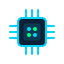

ESP32 + Wokwi
Microcontrolador ESP32 simulado no Wokwi emula os sensores físicos da Dragon: temperatura, umidade, acelerômetro (impacto) e sensor de porta. Publica dados via HTTP no FIWARE Orion.
Uma arquitetura moderna que integra sensores IoT, Context Broker NGSIv2, dashboard em tempo real e Inteligência Artificial para monitoramento contínuo da Dragon C209.
Cinco camadas integradas formam o pipeline de dados do sensor físico até a análise preditiva.

ESP32 Wokwi SimTecnologias de ponta selecionadas para cada camada da arquitetura.
Microcontrolador ESP32 simulado no Wokwi emula os sensores físicos da Dragon: temperatura, umidade, acelerômetro (impacto) e sensor de porta. Publica dados via HTTP no FIWARE Orion.
Context Broker NGSIv2 open-source da FIWARE. Centraliza o estado atual dos sensores em entidades contextuais. O backend faz polling a cada 3 segundos na entidade DRAGON-C209:M-03.
API REST com Express 5 e TypeScript. Banco SQLite nativo via módulo node:sqlite do Node 22, sem dependências extras. Validação com Zod em todas as rotas.
Dashboard de controle de missão com Vite e Recharts. Atualização automática a cada 5 segundos. Interface do astronauta simulando tablet de bordo com tema dark e countdown T+.
Análise preditiva com regressão linear sobre histórico de telemetria. Claude gera relatórios em linguagem natural com nível de risco, recomendações priorizadas e nota de confiança (R²).
Gerado automaticamente a cada leitura do sensor. Quatro tipos: temperatura, umidade, porta aberta e impacto. Dois níveis de severidade: warning e critical.
O microcontrolador ESP32, simulado no Wokwi, lê temperatura, umidade, aceleração e status de porta do compartimento M-03 a cada ciclo de 3 segundos.
O ESP32 publica os dados via PATCH HTTP para a entidade urn:ngsi-ld:Compartment:DRAGON-C209:M-03. O Orion mantém o estado mais recente de cada atributo contextual.
Um serviço Node.js faz polling no Orion a cada 3s com o header fiware-service: smart. Os dados são validados com Zod e persistidos no SQLite como eventos de telemetria.
A cada evento de telemetria, o serviço de alertas compara os valores com os limites nominais de cada compartimento (temp_min, temp_max, humidity_max, impact threshold) e gera alertas automaticamente.
O frontend exibe KPIs, telemetria das últimas 6h e status de todos os compartimentos em tempo real. O AstronautApp fornece inventário de bordo com busca, filtros e baixa de consumo.
Sob demanda, o backend roda regressão linear sobre o histórico de telemetria e consumo. O Claude analisa os resultados e gera um relatório em português com nível de risco, recomendações e nota de confiança baseada no R².
Veja as metas que guiaram o desenvolvimento do OrbitStock e como cada funcionalidade foi planejada para atender a missão.